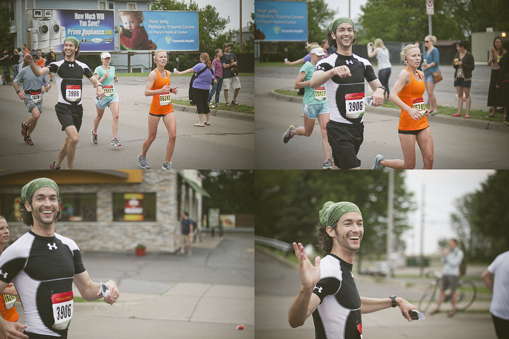

Personality and Disposition
- Strengths Finder: Input, Learner, Connectedness, Restorative, Strategic
- Enneagram: Type 9
-
DiSC Assessment:
Highest dimension: Steadiness and Conscientiousness
Segment Number: D 2 i 4 S 5 C 5
Classical Pattern: Perfectionist
- Meyers-Briggs: ENFP
